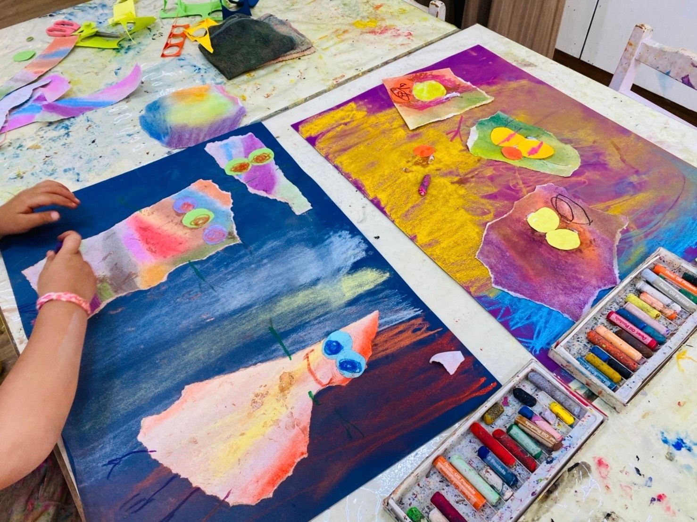
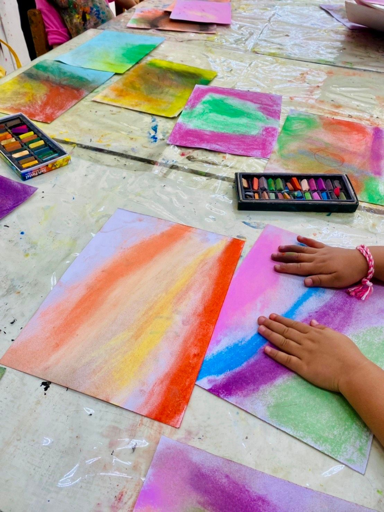

主題介紹
從故事裡長出來的顏色與感覺
繪本，是一扇通往孩子內在世界的門。
在大綠地，我們不是用繪本「說故事」，而是讓孩子在故事裡，找到自己的畫面與情緒表達方式。
我們挑選來自世界各地的經典繪本，包括國際插畫金牌、銀牌等得獎作品，帶孩子欣賞真正值得學習的繪本藝術。
從歐洲細膩的筆觸、亞洲溫潤的色彩，到美洲大膽的圖像風格，每一本繪本，都是一場跨文化的美感旅行。
我們相信：繪本不只是讀出來的，更是看進去、畫出來的。


從故事裡長出來的顏色與感覺
繪本，是一扇通往孩子內在世界的門。
在大綠地，我們不是用繪本「說故事」，而是讓孩子在故事裡，找到自己的畫面與情緒表達方式。
我們挑選來自世界各地的經典繪本，包括國際插畫金牌、銀牌等得獎作品，帶孩子欣賞真正值得學習的繪本藝術。
從歐洲細膩的筆觸、亞洲溫潤的色彩，到美洲大膽的圖像風格，每一本繪本，都是一場跨文化的美感旅行。
我們相信：繪本不只是讀出來的，更是看進去、畫出來的。
這堂課中，孩子們從閱讀一本色彩細膩的故事繪本出發，延伸創作屬於自己的畫面與角色。
你可以看見孩子如何：
這不只是一堂美術課，而是一次孩子學會用圖像表達、用情緒說話的過程。
美感教育，不是技巧的堆疊，而是透過圖像與故事，幫助孩子建立對世界的感受力與表達力。
在大綠地，我們希望孩子在閱讀繪本的同時，
也能愛上閱讀，愛上創作，愛上用畫說話的自己。